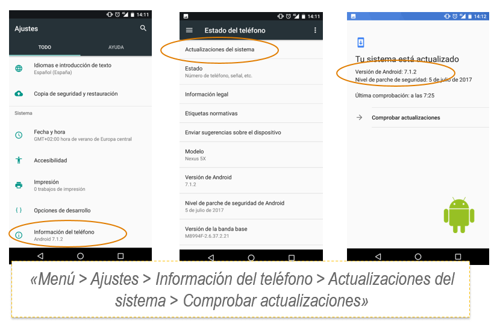
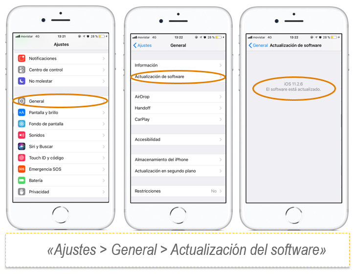
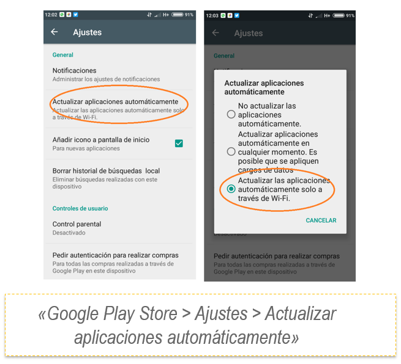
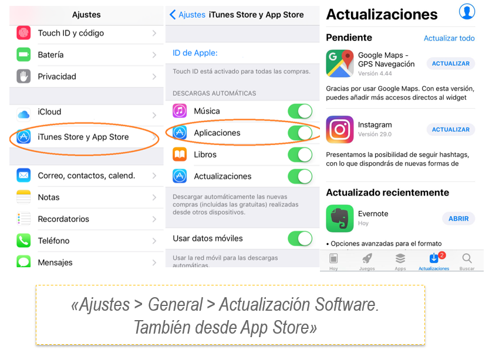

Las actualizaciones además de añadir nuevas funcionalidades o mejorar las ya existentes, también sirven para mejorar la seguridad de los dispositivos. Cualquier clase de software que tengamos instalado, navegadores, programas, plugins, etc. puede tener vulnerabilidades que si no son corregidas podrían ser explotadas por un ciberdelincuente.
Vídeo: Sigue sin actualizar y mira lo que te puede ocurrir
Fuente: (OSI) INCIBE
Las actualizaciones muchas veces corrigen este tipo de vulnerabilidades impidiendo que el atacante pueda explotarlas, por esa razón siempre hay que tener todo el software de nuestros dispositivos completamente actualizado. Esto incluye los programas y sistemas operativos de ordenadores, tabletas, móviles, consolas de videojuegos e incluso televisiones inteligentes.
Las actualizaciones no son un fastidio. Al contrario, son esenciales para mantener la seguridad de nuestros dispositivos
- Actualizaciones de dispositivos móviles
En primer lugar debemos tener en cuenta las actualizaciones del sistema operativo de nuestros dispositivos. En las siguientes imágenes puedes ver cómo proceder, dependiendo de si tu dispositivo utiliza Android o iOS respectivamente.

Actualizaciones de Android

Actualizaciones de iOS
- Actualizaciones de aplicaciones
No debemos olvidarnos de las aplicaciones que tenemos instaladas en nuestros dispositivos. A continuación te mostramos como debes proceder para actualizarlas en sistemas operativos Android e iOS.

Actualizaciones de aplicaciones de Android

Actualizaciones de aplicaciones de iOS
- Actualizaciones de sistemas operativos Windows
En el siguiente vídeo te explicamos cómo activar las actualizaciones automáticas de Windows 7 y Windows 8. De esta manera, cada vez que el fabricante publique una actualización del programa, se instalará automáticamente en el equipo.
Fuente: (OSI) INCIBE
- Actualización de navegadores
No menos importante es la actualización de los navegadores que utilizamos para visualizar las páginas de Internet. Por suerte, los principales navegadores se actualizan por defecto de manera automática para proteger a sus usuarios. Para más detalle sobre como gestionan las actualizaciones los diferentes navegadores y para comprobar si disponemos realmente de la última versión, podemos consultar las páginas de soporte de los propios fabricantes: